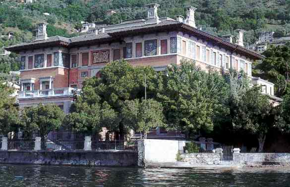

Conference Home
The Workshop on Categorical Algebra CatAlg2011, Recent developments and future perspectives, is focused on the intrinsic study of algebraic categories, with a specific attention to the semi-abelian setting.
CatAlg2011 ideally continues the project started with the meeting "Internal Actions and Internal Structures" organized in Milano in 2006. The interest on semi-abelian categories and related issues has grown since then, so that now the subject itself is getting mature enough for a debate about trends and future perspectives in this area.
Conference pictures here.
New! Marco Grandis' preprint: Coherence and distributive lattices in homological algebra.
